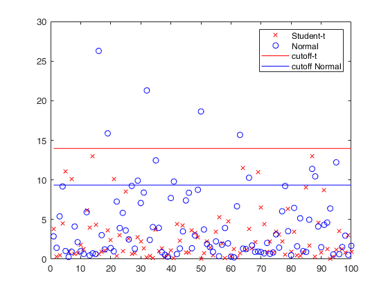

msdcutoff
Mahalanobis Squared Distance cutof
Description
Examples
Related Examples
 cutoff values for robust squared Mahalanobis distances.
cutoff values for robust squared Mahalanobis distances.
cutoff values for robust squared Mahalanobis distances.
n = 100;
v = 3;
nu = 5;
conflev = 0.975;
% sample from the T
Yt = random('T',nu,[n,v]);
Yn = random('Normal',0,1,[n,v]);
% mcd with the T-model
RAWt = mcd(Yt,'modelT',nu,'plots',0);
% mcd with the Normal-model
RAWn = mcd(Yn,'plots',0);
% T-cutoff
cutoffT = msdcutoff(conflev,v,nu);
% Normal-cutoff
cutoffN = msdcutoff(conflev,v);
plot(1:n,RAWt.md,'xr' , 1:n,RAWn.md,'ob');
hold on;
line([1 , n] , [cutoffT , cutoffT] , 'Color', 'r');
line([1 , n] , [cutoffN , cutoffN] , 'Color', 'b');
legend({'Student-t','Normal','cutoff-t','cutoff Normal'});Total estimated time to complete MCD: 0.64 seconds Total estimated time to complete MCD: 0.19 seconds
Input Arguments
Output Arguments
More About
References
Gnanadesikan, R. and Kettenring, J. R. (1972), Robust estimates, residuals, and outlier detection with multiresponse data. Biometrics, 28:81–124.
Barabesi, L. and Cerioli, A. and García-Escudero, L.A. and Mayo-Iscar, A. (2023), Trimming heavy-tailed multivariate data. Submitted.
Mardia, K. and Kent, J. and Bibby, J. (1979), Multivariate Analysis, Academic Press, New York.
Rousseeuw, P.J. and Van Driessen, K. (1999), A fast algorithm for the minimum covariance determinant estimator, Technometrics, 41:212-223.
Maronna, R.A., Martin D. and Yohai V.J. (2006), "Robust Statistics, Theory and Methods", Wiley, New York.